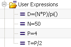
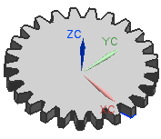

由于您已经使用表达式来定义齿轮参数，现在可以编辑这些值来创建不同的齿轮。
可以在表达式对话框中编辑表达式参数，但也可以在部件导航器中编辑。
打开部件导航器。
展开用户表达式文件夹。

在用户表达式列表中，双击 N，将它的值修改为25并回车。
齿轮现在包含25个齿。

双击表达式 P，将它的值更改为15并回车。
齿轮节距将变大。
使用适合窗口命令来查看整个齿轮。
将增大齿轮以适应变大的齿宽。
修改表达式值来创建其它定制的齿轮。
关闭部件。